Writing a Hardware-Accelerated PBRT Engine
A DirectX12 physically-based renderer running on my sad ass RTX A3000.
Overview
A physics-based GPU path tracer I built for CS5630 (Physically-Based Rendering) at Cornell, the first-ever offering of the class (more on PBR here). More accurately, I primarily wrote the math-heavy logic (hair, volumetrics, etc.) on CPU during the school semester, then in my free time during my summer internship as a systems software engineering intern at LinkedIn, I extended this project to run primarily on GPU.
Every ray bounce, material evaluation, and light sample runs entirely on the GPU via DirectX Raytracing (DXR) with hardware-accelerated ray-triangle intersection. With the techniques implemented here (hair/fiber rendering, skin, the Disney BSDF, and more) you can build a diverse, complicated, beautiful scene with physically-accurate lighting.
- I render a final scene of a "self-portrait" surrounded by nerdy objects I like. This scene contains roughly 2.5 million triangles, 100+ meshes, 100+ distinct textures.
- In terms of perf benchmarking, it is able to render 10+ million triangles.
- Quite a few other interesting scenes are to come...
Contents
Final Render That I Submitted for CS5630 Rendering Competition
The scene was assembled in Blender (about 100 hours in a piece of software I did not know going in), exported mesh by mesh with all world-space transforms baked in, and post-processed with Intel's open-source denoiser.
In terms of the Blender scene assembly, I had some help scanning my face and reconstructing it as a mesh with clean geometry. It looks good, right? And then, I modelled so many small objects in Blender, or took them off of SketchFab and moved them to their respective coordinates in Blender. Consider this a glorified art project. See if you can spot any references (e.g., how many Miku's can you spot?)
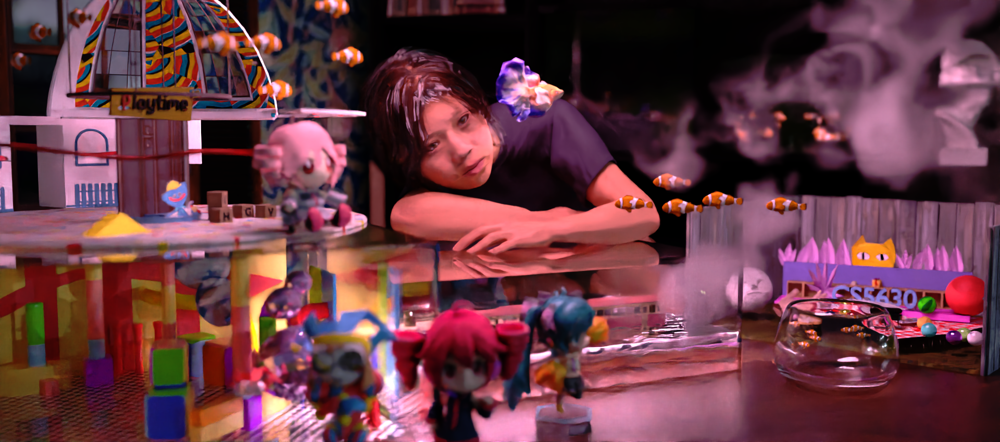
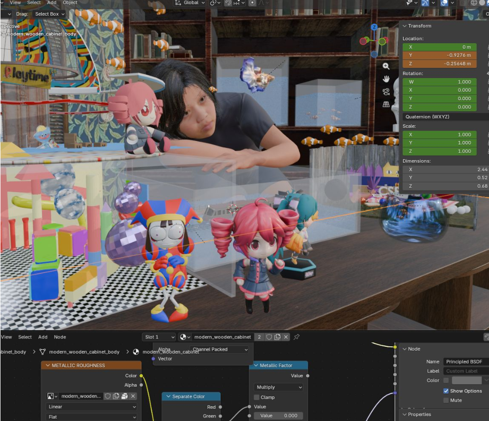
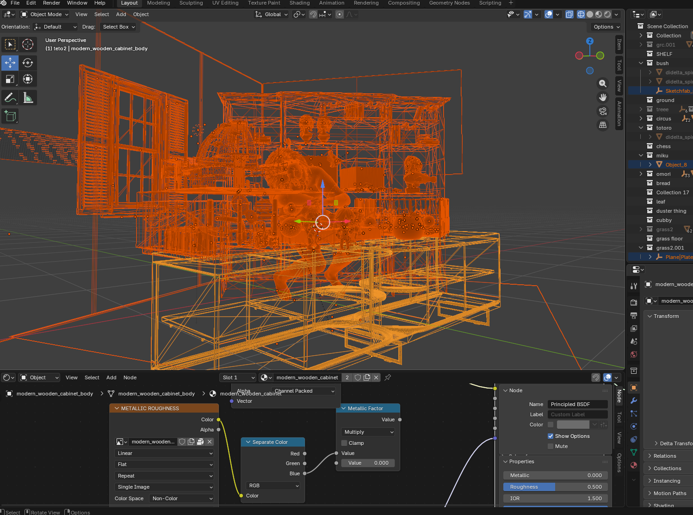
San Miguel Renders
This is a popular computer graphics scene to render. The scene is about 10M triangles so it is a nice way to stress-test performance as well as just get a generally very diverse and pretty scene to render. Credits to McGuire Computer Graphics Archive for all the geometry and textures!
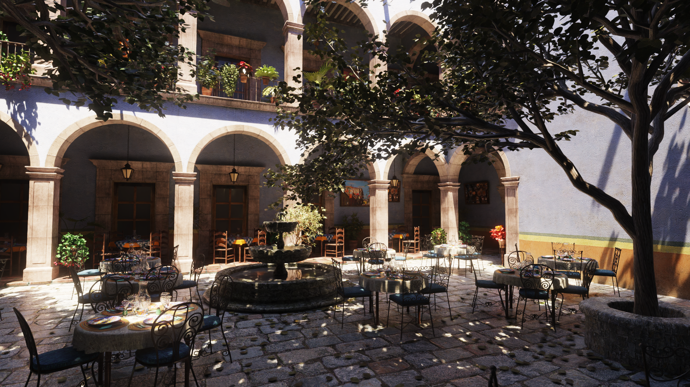
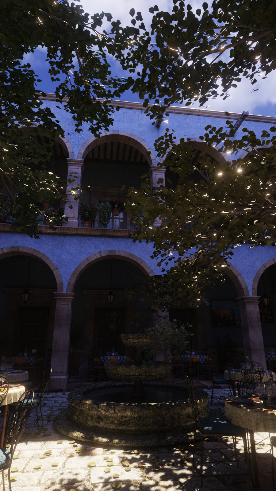
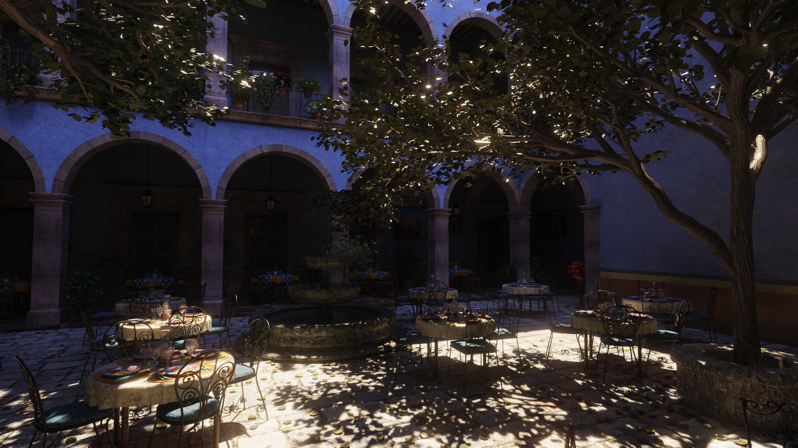
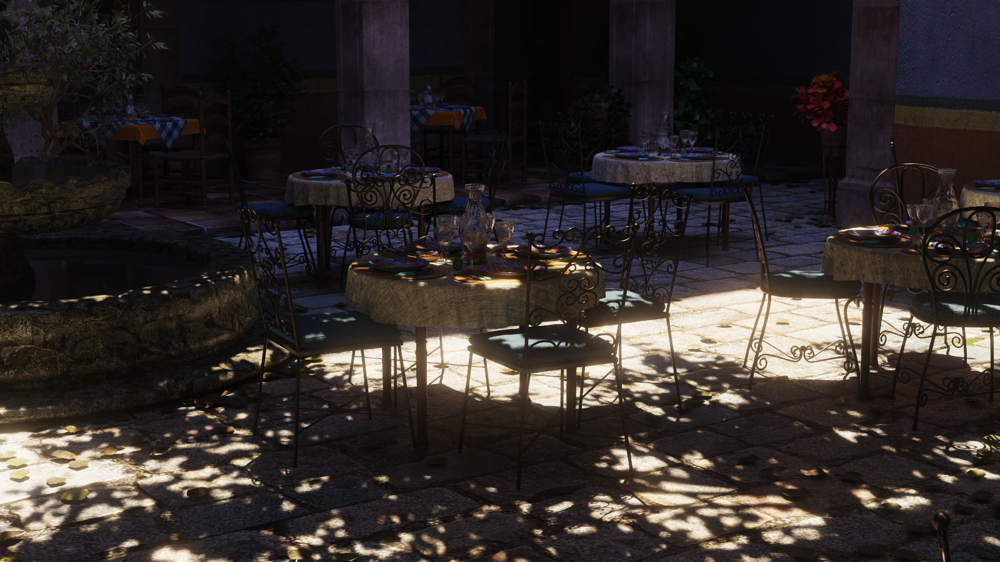
BMW M6
The model and texture is from the pbrt-v4-scenes collection. The car itself is "BMW M6 2006" by tyrant monkey, released CC0 on BlendSwap.
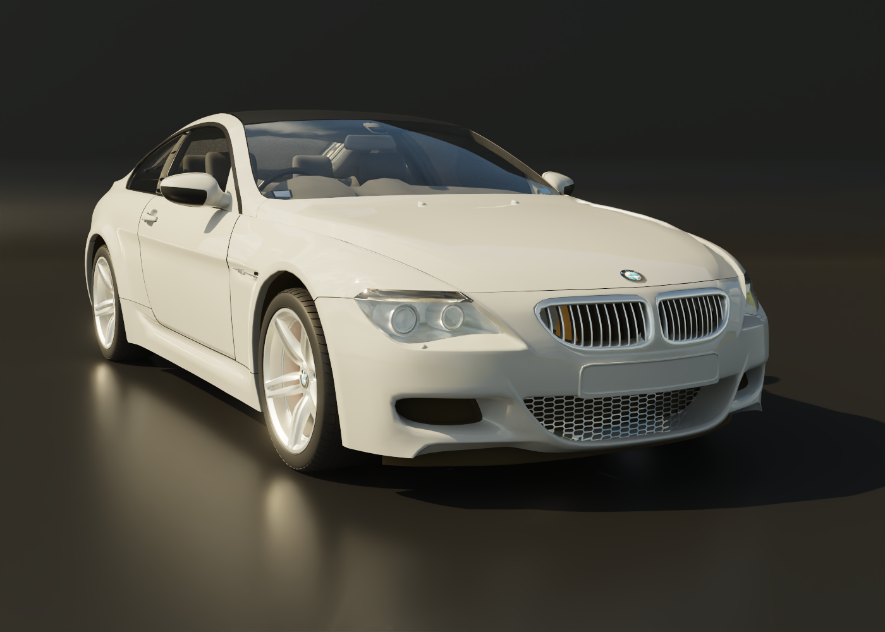
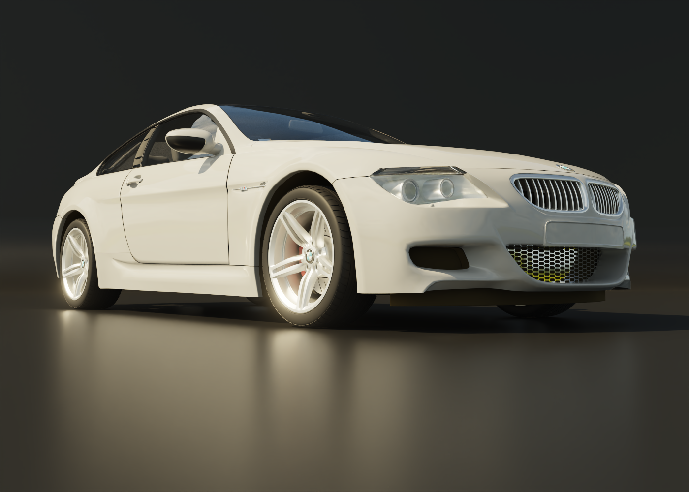
This one not only looks cool but serves as a material stress test. It leans on the Disney BRDF primarily, where nearly every knob on it gets used somewhere on the car. There are about 26 different materials resolved to a few different categories:
- dielectric coat over diffuse base: body paint, tires, leather, brake discs, studio floor
- bare metal: chrome trim, kidney grille, silver in roundel
- metal under clearcoat: wheel rims
- specular glass for glass objects
- flat lambertian
Sportscar
Also from the pbrt-v4-scenes collection.
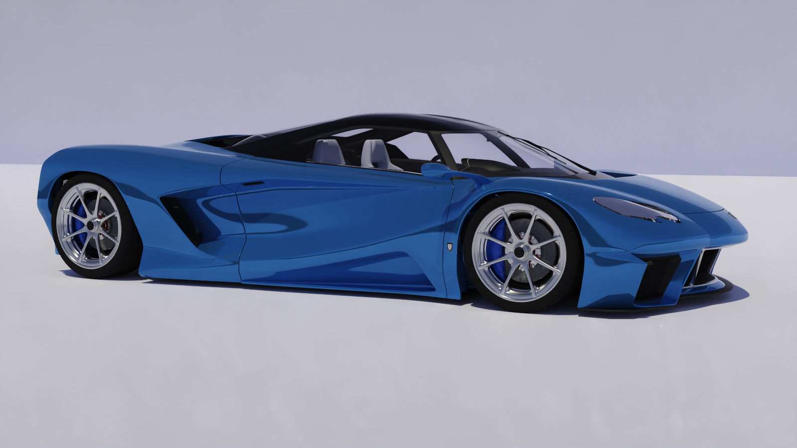
Architecture
The whole pipeline (shooting rays, finding intersections, all the beautiful shading math, shadow testing) is implemented in HLSL and dispatched through DXR. Here are some interesting design decisions (in my opinion):
All textures in one array. Every texture in the scene is loaded into a single unbounded GPU array. Each material stores small integer indices pointing into that array, so any shader invocation can reach any texture with a single indexed sample. 50+ textures can coexist without any special-casing.
Geometry in flat GPU buffers. UVs, normals, and tangents for every mesh are concatenated into large flat buffers at scene build time. When a ray hits a triangle, DXR gives the shader an instance ID and primitive index, which it uses to look up the right three vertices and interpolate the attributes at the hit point, without any per-mesh binding.
Mip levels from hit distance. Without a proper ray differential framework, mip level is approximated from the hit distance and the screen resolution. It's not perfect, but it avoids obvious aliasing on surfaces seen at a glancing angle.
Stochastic alpha for hair and eyelashes. Alpha-textured meshes (hair cards, eyelashes, eyebrows) are marked as non-opaque in the acceleration structure. This tells DXR to call a small any-hit shader on each candidate intersection rather than accepting it automatically. The shader samples the alpha texture and probabilistically accepts or discards the hit (using α² rather than α, since alpha maps from most DCC tools are perceptually encoded). This applies to both primary rays and shadow rays, so strand silhouettes cut out in shadows too.
Intel OIDN at the end. The raw HDR framebuffer goes through Intel Open Image Denoiser before tone-mapping.
Rendering Techniques
Hair (Chiang et al. 2016 BCSDF)
Rendering hair is hard, both in terms of performance and visual accuracy. This is because a single fiber is a translucent dielectric cylinder, so light can reflect off the outside, transmit straight through, bounce internally, or some combination. Now imagine thousands of these.
I implemented the Chiang 2016 model, which breaks this down into four scattering paths:
| Path | Description |
|---|---|
| R | Reflects off the outer cuticle surface |
| TT | Transmits in through one side and out the other |
| TRT | Transmits in, bounces off the inside, transmits back out |
| residual | Everything with 3 or more internal bounces, summed analytically as a geometric series |
Each path is attenuated by Fresnel reflectance at each interface and Beer-law absorption through the fiber interior:
$$T = \exp\!\left(-\sigma_a \cdot \frac{2\cos\gamma_t}{\cos\theta_t}\right)$$
where $\sigma_a$ is the absorption coefficient, derived from the target hair color via a polynomial fit: you specify color directly, not raw absorption values. The four attenuation values work out to:
ap[0] = f; // R: one Fresnel reflection ap[1] = (1-f)*(1-f) * T; // TT: transmit in, absorb, transmit out ap[2] = ap[1] * T * f; // TRT: TT path + internal bounce + T again ap[3] = ap[2] * f*T / (1 - f*T); // residual: geometric series for p>=3
The full scattering function factors into longitudinal ($M_p$), attenuation ($A_p$), and azimuthal ($N_p$) terms. Importance sampling picks a path by luminance weight, draws a longitude direction from the $M_p$ distribution, and an azimuth from a trimmed logistic distribution.
Hair cards are supported!: flat quad meshes textured with a grayscale strand atlas, made transparent via the alpha any-hit shader described above.
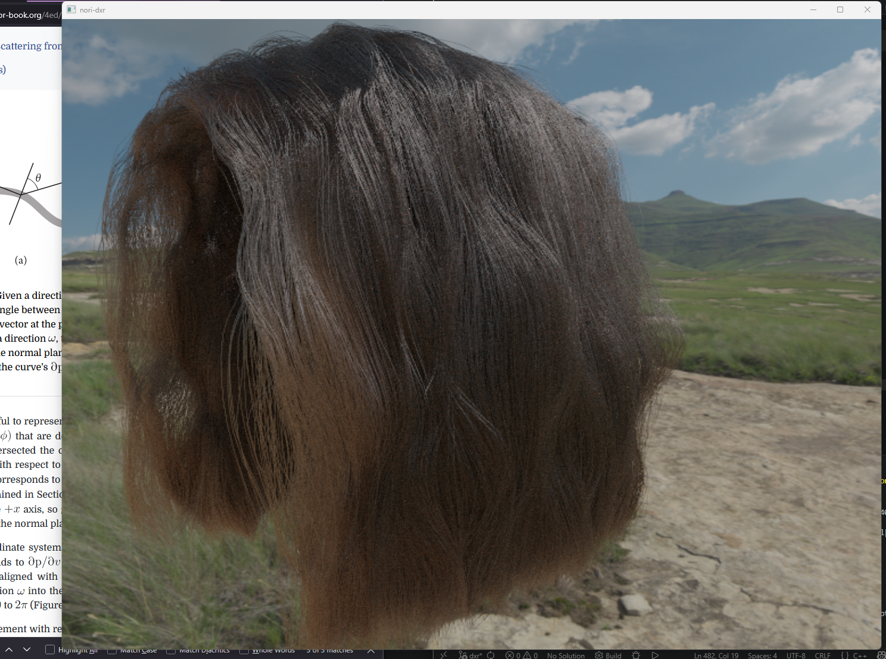
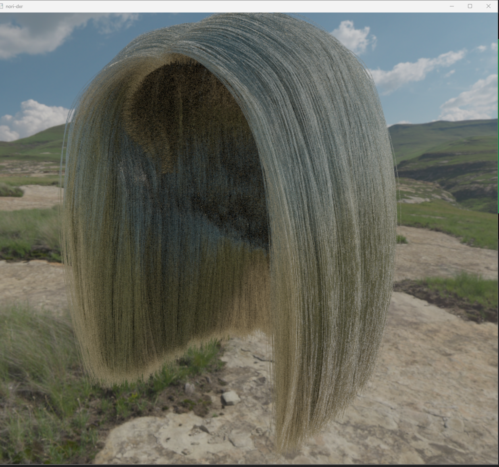
Disney "Principled" BRDF
The Disney BRDF (Burley 2012) is the material model used in most production renderers and game engines.
It wraps five physically-motivated scattering lobes into one material with artist-friendly parameters
(metallic, roughness, subsurface, sheen,
clearcoat, etc.) instead of raw physical coefficients.
The five lobes, with $\omega_i$ and $\omega_o$ being the incident and outgoing directions and $\mathbf{h} = \text{normalize}(\omega_i + \omega_o)$ the half-vector:
| Lobe | Formula | What it does |
|---|---|---|
| Burley diffuse | $\frac{c}{\pi}(1+(F_{D90}-1)(1-\cos\theta_i)^5)(1+(F_{D90}-1)(1-\cos\theta_o)^5)$ | Rough diffuse with retroreflection at grazing angles |
| Hanrahan-Krueger subsurface | $\frac{1.25c}{\pi}\left(F_{ss,i} F_{ss,o}\left(\frac{1}{\cos\theta_i+\cos\theta_o} - 0.5\right) + 0.5\right)$ | Flat-slab subsurface approximation; softens the shadow terminator |
| GGX specular | $\frac{D_\text{GGX}\, F_\text{Schlick}\, G_\text{Smith}}{4\cos\theta_i\cos\theta_o}$ | Microfacet specular highlight |
| Sheen | $\kappa_\text{sheen}\, C_\text{sheen}\, (1-\cos\theta_D)^5$ | Grazing-angle brightening for cloth/fabric |
| Clearcoat | $\frac{0.25\, k_{cc}\, D_\text{GTR1}\, F_{0.04}\, G_{0.25}}{4\cos\theta_i\cos\theta_o}$ | Thin dielectric layer on top, like the coating on car paint or glossy plastic |
The combined BRDF is $f = (1-\text{metallic})\,f_\text{diffuse} + f_\text{specular} + f_\text{sheen} +
f_\text{clearcoat}$. Setting metallic=1 zeroes out the diffuse and tints the specular by
baseColor, making a conductor. For sampling, a lobe is chosen weighted by its estimated
contribution, then a direction is drawn from that lobe's distribution.
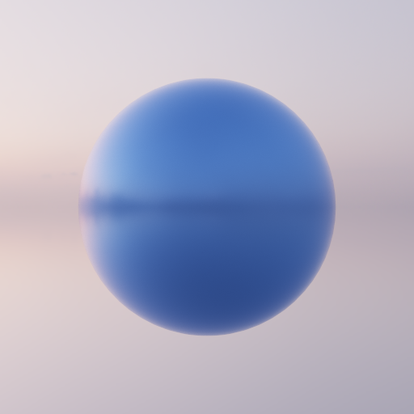

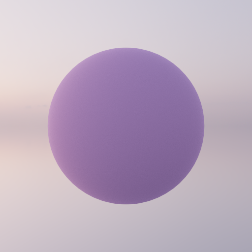
Volumetric Participating Media
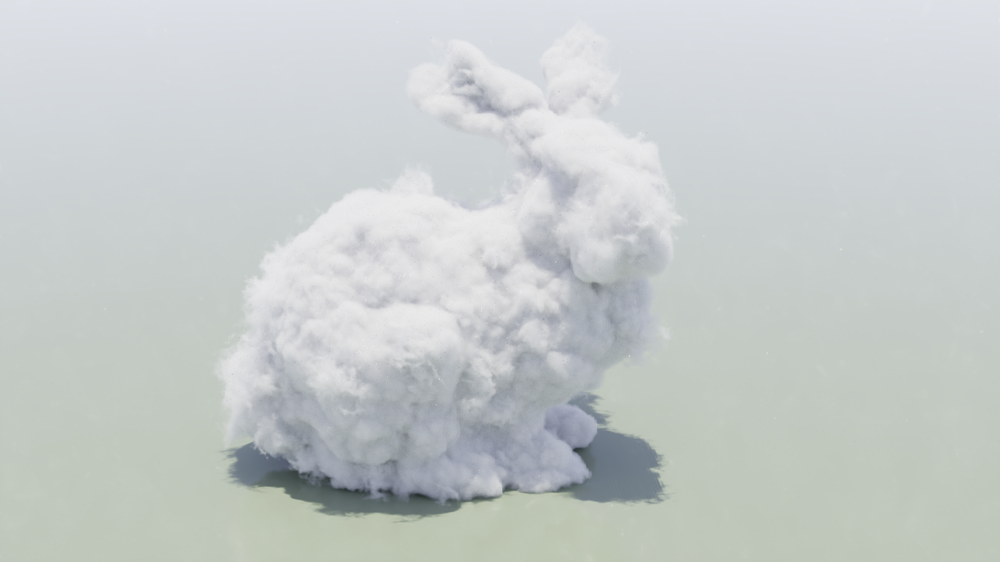
Volumetrics are objects that are not solid, and they are another rendering challenge mathematically, accurately, performance-wise, whatever. Fog, smoke, and clouds scatter or absorb light as rays travel through them, not just at surfaces. A homogeneous medium has three parameters: absorption $\sigma_a$, scattering $\sigma_s$, and an asymmetry parameter $g$ that controls how directional the scattering is.
The probability that a ray makes it distance $d$ without interacting follows Beer's law:
$$T(d) = \exp(-\sigma_t\, d), \quad \sigma_t = \sigma_a + \sigma_s$$
When a scatter event does happen, the new direction is drawn from the Henyey-Greenstein phase function:
$$f_p(\cos\theta) = \frac{1-g^2}{4\pi\,(1 + g^2 - 2g\cos\theta)^{3/2}}$$
$g=0$ is isotropic (scatter equally in all directions); $g \to 1$ concentrates light forward, like thin aerosols or clouds in sunlight. This function is analytically invertible, so importance sampling is exact.
Free-flight distances are sampled via Woodcock (null-collision) tracking: propose a step under an overestimate of the density, then randomly decide if it's a real collision or a null one. This also extends cleanly to heterogeneous media since you only need an upper bound on the density, not the exact value everywhere.


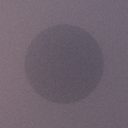
Subsurface Scattering: Random-Walk BSSRDF
A BRDF assumes light leaves where it entered, so for general opaque materials this holds. However this does not hold for skin, where light sinks into the skin, scatters, and surfaces from some other angle. This is the reason why ears and fingers glow red when backlit.
So I simulate the photon directly, reusing the participating media transport with the medium bounded by the mesh:
- Refract in at the hit point and Fresnel decides reflect vs. transmit.
- Sample a free-flight distance under the medium.
- Reaching the boundary from inside, refract out or turn back on total internal reflection.
- Otherwise scatter with Henyey-Greenstein and go back to 2.
Path tracing resumes where the photon escapes.
| Parameter | What it is |
|---|---|
| albedo $A$ | The color you want coming back out |
| radius | Mean free path: distance travelled between scattering events. |
You hand it a color, not physical coefficients, which is how both columns below can use the same albedo texture. An interesting note is that the conversion is not obvious, though: a photon collides many times before it escapes, so its survival odds per collision must run much higher than the color you want back, and $A = 0.62$ needs $\alpha = 0.959$. Chiang, Kutz and Burley fitted that curve in their subsurface paper:
$$\alpha = 1 - \exp\left(-5.09406A + 2.61188A^2 - 4.31805A^3\right)$$
with $\sigma_t = 1/\text{radius}$ and $\sigma_s = \alpha\,\sigma_t$. It runs per channel, where red survives the most collisions (therefore light that leaks into shadow sometimes has a red tint!)
Head from pbrt-v4-scenes. Generally, Disney BRDF can render a lot of materials, including cartoon character skin, but for more realistic skin, you can see where it falls short. Both columns share geometry, albedo, camera, light, 1024 spp, etc etc and only the diffuse model changes:
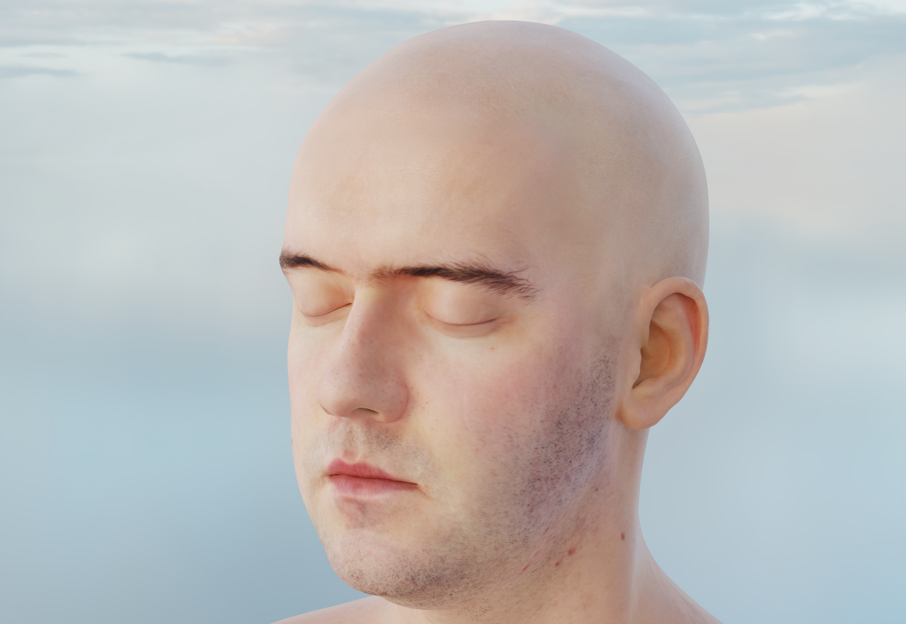
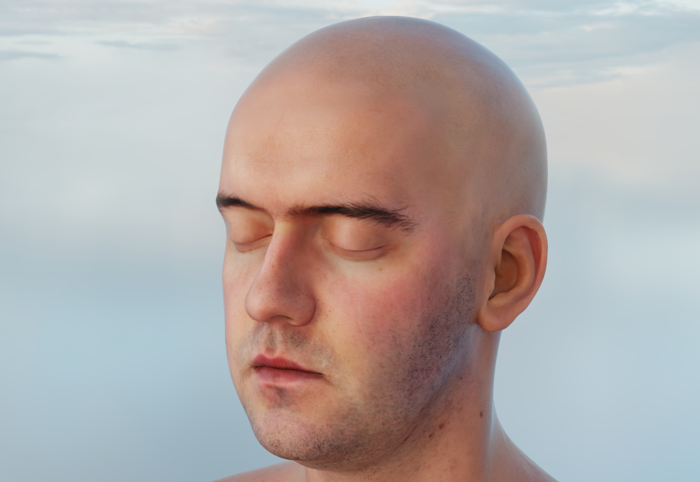
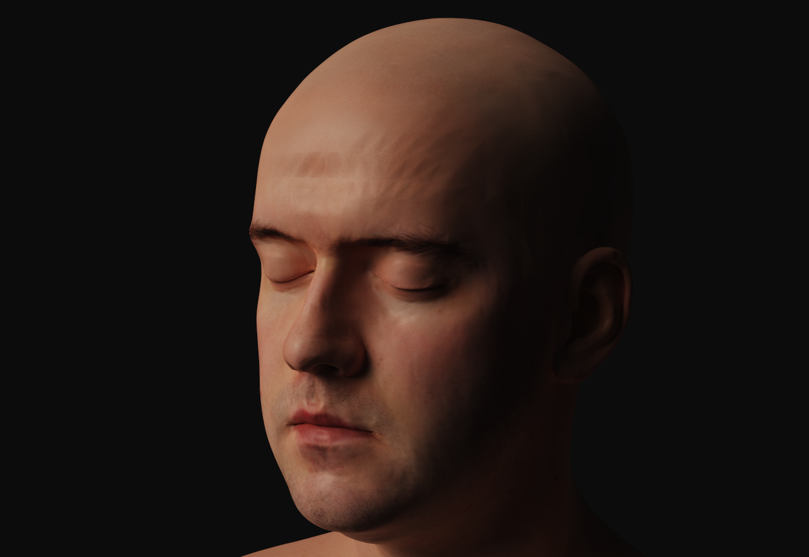
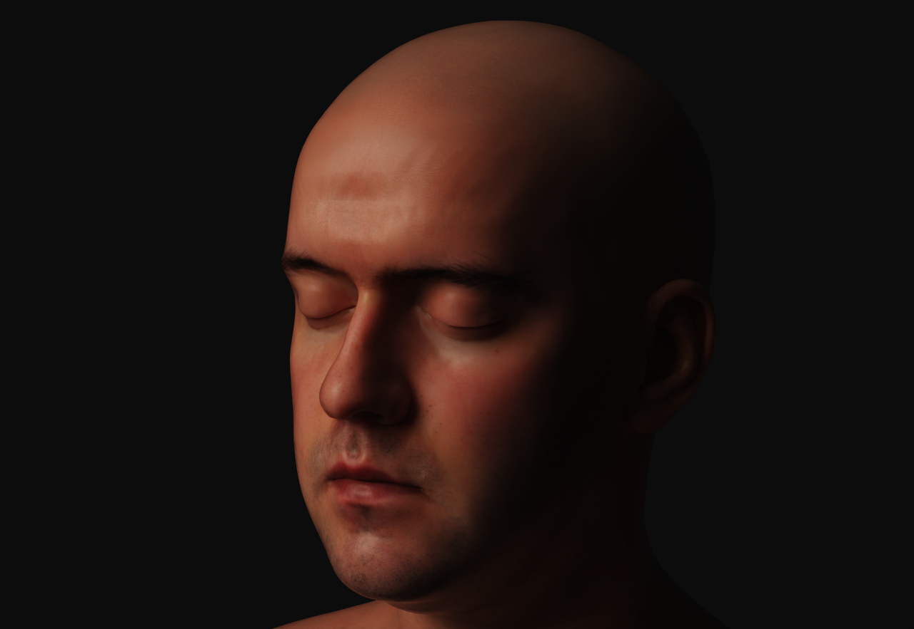
More Boring and but Fundamental Stuff: Textures
At the hit point, the shader computes the UV by barycentrically interpolating the three vertex UVs of the struck triangle. Albedo textures decode sRGB automatically (the hardware handles the gamma); normal and roughness maps are loaded as linear data. The sampled value then replaces the material's flat scalar before the BSDF runs.


Normal Mapping
Normal mapping makes a flat polygon look like it has surface detail by perturbing the shading normal at each hit point using a texture that stores tangent-space normals.
To do this, the shader reconstructs a per-triangle tangent frame from the UV layout. Given the three edge vectors and UV differences of the hit triangle, the tangent direction is:
$$\mathbf{T} = \frac{\Delta v_2 \, \mathbf{e}_1 - \Delta v_1 \, \mathbf{e}_2}{\Delta u_1 \Delta v_2 - \Delta u_2 \Delta v_1}$$
This gets orthogonalized against the interpolated vertex normal $\mathbf{N}$ (Gram-Schmidt), and the bitangent follows as $\mathbf{B} = \mathbf{N} \times \mathbf{T}$. The RGB value from the normal map is then mapped from $[0,1]^3$ to $[-1,1]^3$ and rotated into world space:
$$\mathbf{N'} = \text{normalize}(\mathbf{T} n_x + \mathbf{B} n_y + \mathbf{N} n_z)$$


Depth of Field (Thin Lens Model)
A pinhole camera is sharp everywhere. A real lens has a finite aperture, so anything off the focal plane blurs into a circle of confusion whose radius scales with how out of focus it is:
$$r_\text{CoC} = r \cdot \frac{|z - d_f|}{z}$$
where $r$ is the lens radius and $d_f$ is the focal distance. To simulate this, each primary ray is generated in two steps: first find where the pinhole ray would hit the focal plane (the focus point), then randomly offset the ray origin across the aperture disk while keeping the ray aimed at that same focus point. The aperture is sampled with a uniform disk distribution (concentric mapping to avoid bunching at the center).


The subject (red cube) stays sharp while the background blurs more as the aperture opens up.
Image-Based Lighting (IBL)
Rather than placing explicit lights, a scene can be lit by an HDR panorama (or a combination of lights + IBL. Also IBL is a good hack for getting non-grainy scenes because it has less high-variance sampling!) Rays that miss all geometry look up their direction in the panorama and return that radiance.
In sampling IBL, a uniform random direction wastes most samples on the dark sky, so at load time we build a 2D CDF over the image pixels, with each pixel weighted by its luminance times $\sin\theta$ (to correct for equirectangular pixels covering less solid angle near the poles). At render time, two binary searches pick a row then a column, sampling directions proportional to their brightness. The resulting solid-angle PDF is:
$$p_\omega = p_\text{pixel} \cdot \frac{W \cdot H}{2\pi^2 \sin\theta}$$
Environment samples are combined with BSDF samples using MIS.
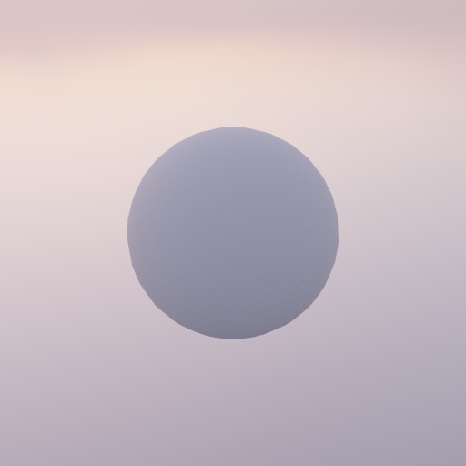

Performance & Optimization
The renderer is a megakernel path tracer: the whole bounce loop, every BSDF above,
next-event estimation with MIS, and the volume tracking all run inline in one RayGen()
shader. It's a progressive accumulator, so each frame adds one sample per pixel and the image refines
over time. All development and profiling was on a mobile RTX A3000, which throttles
and crashes under sustained load, so this section leans on cheap measurements rather than heavy
reference renders.
Megakernel vs wavefront
The alternative to a megakernel is a wavefront tracer that splits the work into separate generation, intersection, shading, and shadow passes and sorts rays by material between bounces. That's the design "Megakernels Considered Harmful" (Laine, Karras, Aila 2013) argues for, and it's what PBRT's GPU backend uses; it gets higher throughput on big scenes because sorting restores coherence and each small pass hits higher occupancy.
The tradeoff is that a wavefront tracer spills path state to global memory between passes and turns every new material into a scheduling problem. The megakernel keeps path state in registers across bounces and keeps the whole renderer in one shader, which made adding hair, then Disney, then volumes, then subsurface scattering cheap. For my renderer that outputs an accumulated, denoised final (not a 1-spp real-time frame), this iterative design choice was ok.
Measurement setup
to come
Development Log (CPU-side beginnings)
Before any of the above ran on the GPU, this started as a CPU-bound ray tracer. These entries document that earlier progress step by step, starting from basic ray tracing optimizations (BVH acceleration structure with thread parallelization for the 67th time) and building up from there.
2/9/2026: Monte Carlo integration for photorealistic rendering stuff yay woo wahoo i love math
yeah
2/8/2026: We balling with C++ parallelization library
After implementing the basic BVH, one tends to figure out two things. One, BVH fast. Two, building the BVH still takes a while. I profiled the time it takes to build the BVH on my machine (my machine iiiiiis a 12th Gen Intel(R) Core(TM) i7-12800H yet it is hanging on by a thread hahahahahah):
BVH Statistics: Build time: 657.81 ms Triangle count: 544566 Interior nodes: 77570 Leaf nodes: 77571 Avg triangles per leaf: 7.02023 Bytes per node: 32 Total nodes: 155141
Spoiler alert, I brought that time down to 160ms. Let's see how!
Basically serial BVH construction builds the tree by appending nodes into a single shared array as it recurses. Therefore, I employ the helpful Thread Building Blocks Library to attempt to parallelize the tree building process. As my code is right now, two threads CANNOT safely push to the same array at the same time. Rather than trying to synchronize access to a shared data structure, I restructured the build so each subtree is constructed in complete isolation (average cs major lifestyle is also to be in complete isolation); it gets its own copy of the triangle indices and builds into its own private arrays of nodes and indices, with no shared mutable state between threads:
struct BVHBuildResult {
std::vector<BVHNode> nodes;
std::vector<uint32_t> indices;
};
// each call owns its indices (passed by value) and writes to its own result
BVHBuildResult Accel::buildParallel(std::vector<uint32_t> indices, const BoundingBox3f &bbox) {
BVHBuildResult result;
// ... SAH split logic, partition into leftIndices / rightIndices ...
At each split, if the current subtree contains a shit ton of triangles (I set 1024 as the threshold), the left and right children are dispatched as concurrent tasks using TBB's task_group. Below that threshold we just run the construction serially because the overhead of task scheduling outweighs the benefits for small workloads!
BVHBuildResult leftResult, rightResult;
if (count >= PARALLEL_THRESHOLD) { // PARALLEL_THRESHOLD = 1024
tbb::task_group tg;
tg.run([&]() { leftResult = buildParallel(std::move(leftIndices), leftBox); });
tg.run([&]() { rightResult = buildParallel(std::move(rightIndices), rightBox); });
tg.wait();
} else {
leftResult = buildParallel(std::move(leftIndices), leftBox);
rightResult = buildParallel(std::move(rightIndices), rightBox);
}
Once the children finish, their independently built arrays are merged back together into the parent's result. The final merged result slots directly into the same flat node layout the serial BVH construction produces, so I didn't have to modify any ray traversal code at all! And this approach scales well because TBB's work-stealing scheduler is really good at handling load balancing across cores.
With all that said, the build time is now much smaller with all other stats being the same!
BVH Statistics: Build time: 168.2 ms Triangle count: 544566 Interior nodes: 77570 Leaf nodes: 77571 Avg triangles per leaf: 7.02023 Bytes per node: 32 Total nodes: 155141
C++ library import is a nightmare but we balling. Here is some more stats if you gaf:
gracejin@grace:~/nori-26sp/build$ ./nori ../scenes/a1/ajax-normals.xml --no-gui
Loading "../scenes/a1/ajax.obj" .. done. (V=409676, F=544566, took 1.5s and 18.7 MiB)
BVH Statistics:
Build time: 168.2 ms
Triangle count: 544566
Interior nodes: 77570
Leaf nodes: 77571
Avg triangles per leaf: 7.02023
Bytes per node: 32
Total nodes: 155141
Configuration: Scene[
integrator = NormalIntegrator[],
sampler = Independent[sampleCount=32]
camera = PerspectiveCamera[
cameraToWorld = [ -0.5356, 0.2999, 0.7894, -65.61;
1.353e-05, 0.9348, -0.3551, 47.58;
-0.8445, -0.1902, -0.5007, 24.36;
0, 0, 0, 1],
outputSize = [768, 768],
fov = 30.000000,
clip = [0.000100, 10000.000000],
rfilter = GaussianFilter[radius=2.000000, stddev=0.500000]
],
meshes = {
Mesh[
name = "../scenes/a1/ajax.obj",
vertexCount = 409676,
triangleCount = 544566,
bsdf = Diffuse[
albedo = [0.500000, 0.500000, 0.500000]
],
emitter = null
]
}
]
Rendering .. done. (took 2.2s)
Writing a 768x768 OpenEXR file to "../scenes/a1/ajax-normals"
Writing a 768x768 PNG file to "../scenes/a1/ajax-normals"
gracejin@grace:~/nori-26sp/build$
2/6/2026: starting writing basic, CPU-bound ray tracer in C++
Question: how do we speed up rendering 500k+ triangles from taking 30+ minutes to take 2 seconds?
We start with a very basic, unoptimized CPU bound codebase. The base code from this library currently implements a brute force ray intersector algorithm, in short it traces a ray against all triangles and stores the resulting information in an intersection struct. This shit slow:
/* Brute force search through all triangles */
for (uint32_t idx = 0; idx < m_mesh->getTriangleCount(); ++idx) {
float u, v, t;
if (m_mesh->rayIntersect(idx, ray, u, v, t)) {
/* An intersection was found! Can terminate
immediately if this is a shadow ray query */
if (shadowRay)
return true;
ray.maxt = its.t = t;
its.uv = Point2f(u, v);
its.mesh = m_mesh;
f = idx;
foundIntersection = true;
}
}
Let's do the low hanging fruit of implementing a Bounding Volume Hierarchy, which organizes a scene's triangles into a binary tree where each node stores an axis-aligned bounding box enclosing all geometry in its subtree. During ray tracing, if a ray misses a node's bounding box, the entire subtree is skipped, which turns O(n) brute force search into something closer to O(log n). For the scene I rendered with more than 500k triangles, this optimization determines the difference between minutes and seconds (for the brute force version of my code, I ran it for 30+ minutes before rage quitting.) Here is a picture of BVH acceleration:

And, my basic algorithm looks like this:
buildBVH(triangles, bbox):
if no triangles: return null
if triangles ≤ 10: return leaf(triangles)
// SAH binned split along longest axis
axis = longest axis of bbox
divide axis into 12 bins
for each triangle:
assign to bin based on centroid position
// evaluate all 11 candidate splits
bestCost = ∞
for each split plane between bins:
cost = surfaceArea(left) × count(left)
+ surfaceArea(right) × count(right)
if cost < bestCost: record this split
// only split if it's cheaper than a leaf
if bestCost ≥ surfaceArea(bbox) × totalCount:
return leaf(triangles)
partition triangles at best split
return interior(
left = buildBVH(leftTriangles, leftBBox),
right = buildBVH(rightTriangles, rightBBox)
)
rayTraverse(ray):
stack = [root]
while stack not empty:
node = stack.pop()
if ray misses node.bbox: skip
if node is leaf:
test ray against each triangle
if shadow ray and hit: return true
else:
stack.push(left child)
stack.push(right child)
return closest hit
The construction of my BVH is top-down, at each node I use the Surface Area Heuristic to find a good split. I bucket the triangle centroids into a few bins along the bounding box's longest axis, and I evaluate the SAH cost C = S(A) * N_A + S(B) * N_B for each candidate split plane. The split that minimizes the cost is chosen. My design for ray traversal uses an explicit stack rather than recursion, with a fixed-size array of 64 entries (more than enough) to avoid any per-ray heap allocation:
uint32_t stack[64];
int stackPtr = 0;
stack[stackPtr++] = 0; // start at root
while (stackPtr > 0) {
const BVHNode &node = m_nodes[stack[--stackPtr]];
if (!node.bbox.rayIntersect(ray))
continue;
if (node.isLeaf()) {
// test triangles in this leaf
} else {
stack[stackPtr++] = nodeIdx + 1; // left child
stack[stackPtr++] = node.start; // right child
}
}
After I implemented this optimization, I ultimately shaved the brute-force render time from over half an hour to about 2 seconds. This is 800x faster!